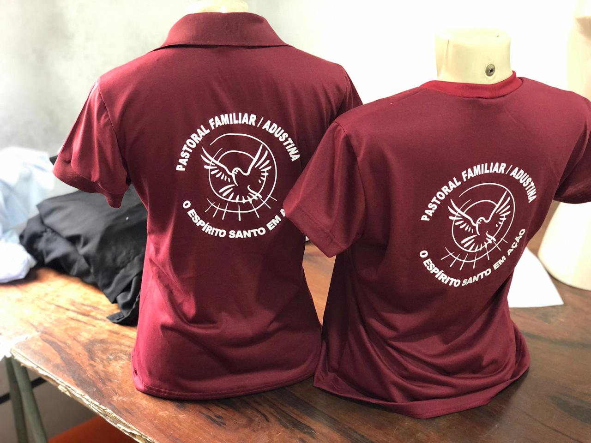
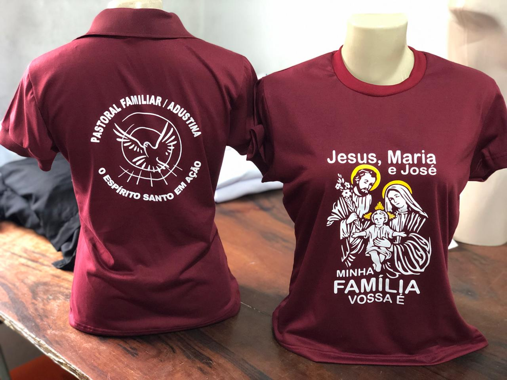
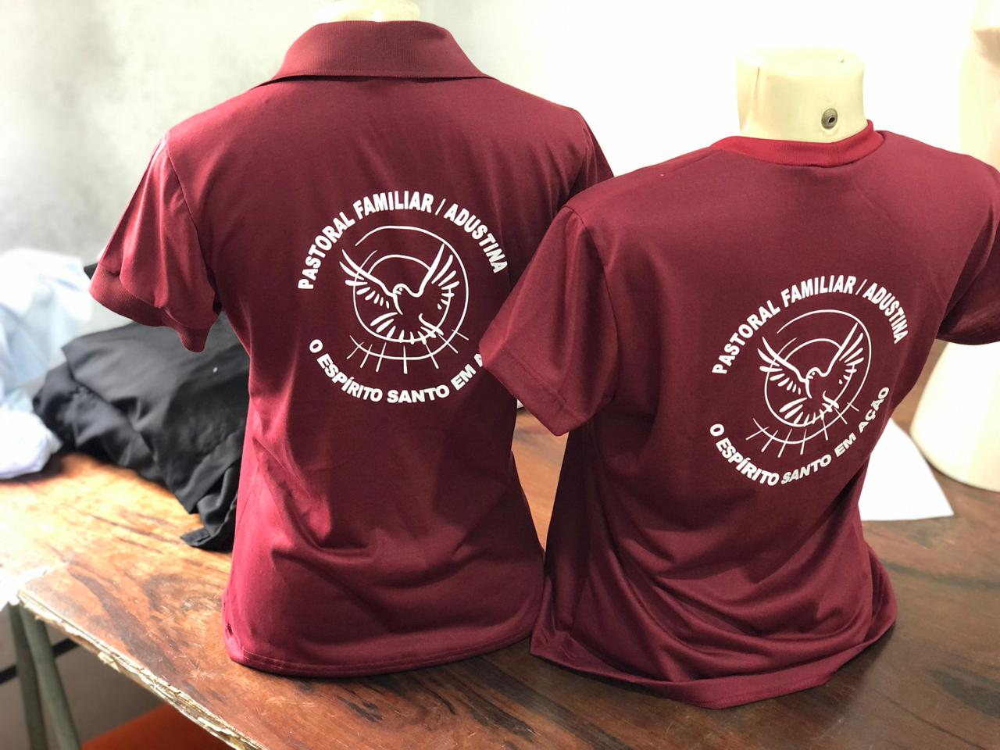
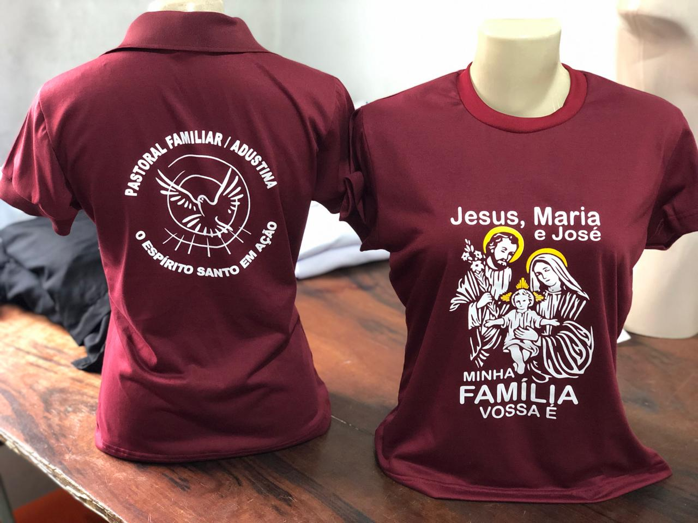
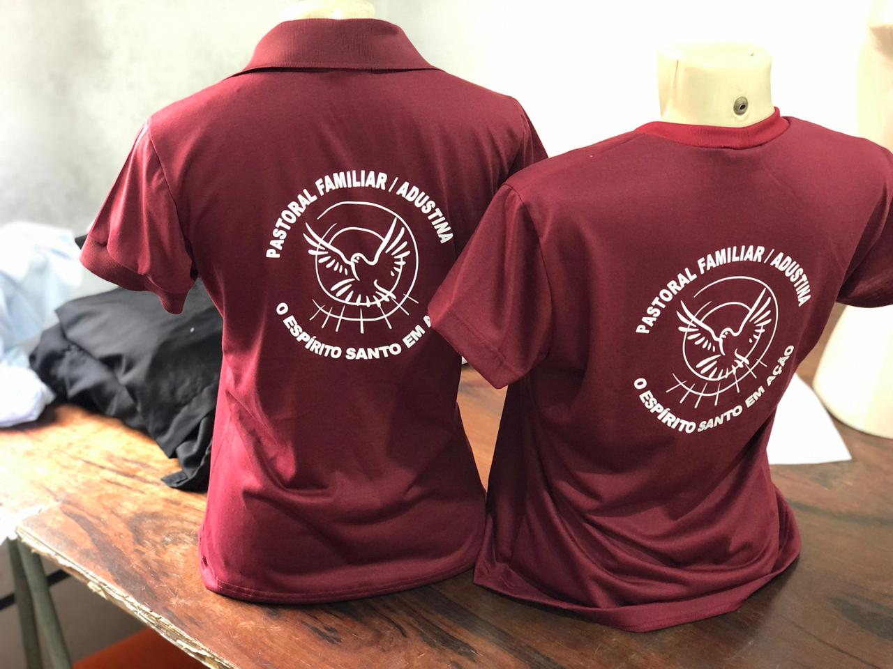
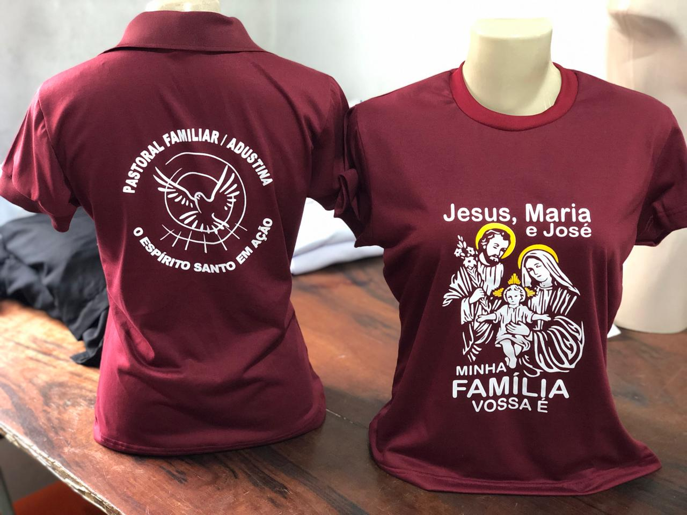

Uniforme Religioso
Identidade visual para camisetas do tipo Polo e T-shirt de uso pessoal. O modelo envolveu aplicação de estampa, escolha de tipografia e estilo único.
 



Identidade visual para camisetas do tipo Polo e T-shirt de uso pessoal. O modelo envolveu aplicação de estampa, escolha de tipografia e estilo único.

